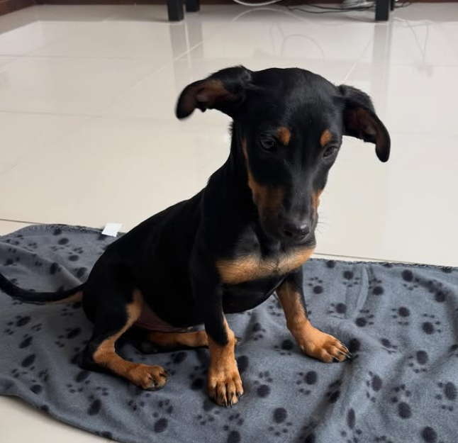

SOMOS DOG LOVER
Buscamos proteger la vida de perros en estado de maltrato y abandono. Les brindamos alimentos, medicamentos y albergue, con el fin de mejorar su calidad de vida y conseguirles un hogar.
Servicios
En Dog Lover, ofrecemos una variedad de servicios diseñados para garantizar el bienestar de los perros y facilitar su integración en nuevos hogares.
- Adopción: Encuentra a tu compañero ideal.
- Asesoramiento: Consejos de cuidado y alimentación.
- Eventos: Jornadas de adopción.
- Apadrinamiento: Ayuda sin adoptar.
- Voluntariado: Únete a nuestro equipo.

Nosotros
Dog Lover nació del amor por los animales y el deseo de darles una segunda oportunidad. Trabajamos con refugios y voluntarios.
Contacto
Escríbenos a contacto@doglover.com o llámanos al +34 600 123 456.